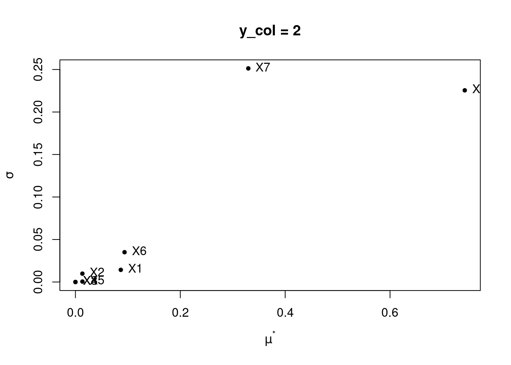
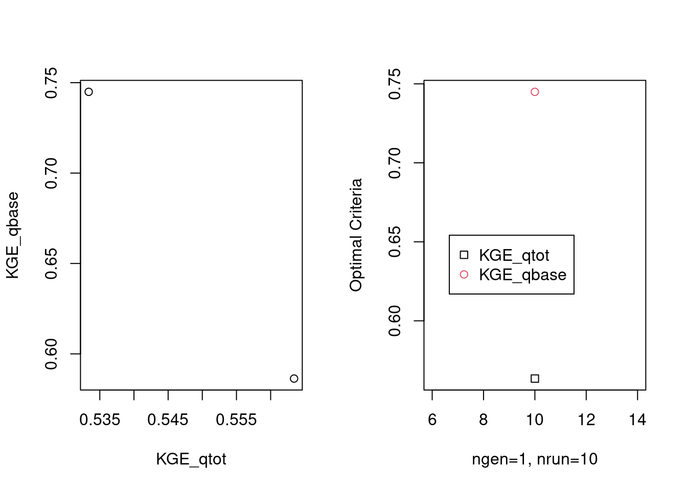
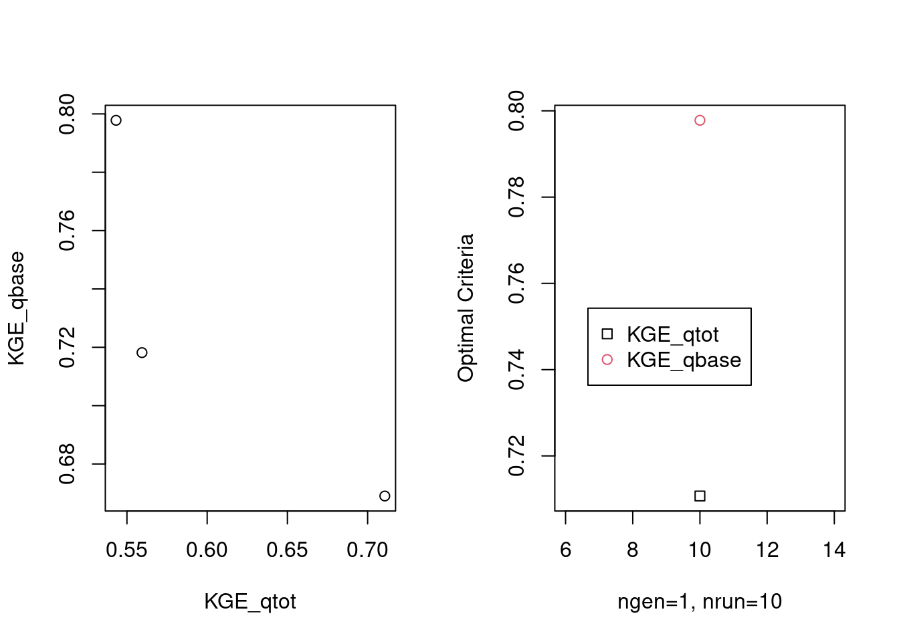
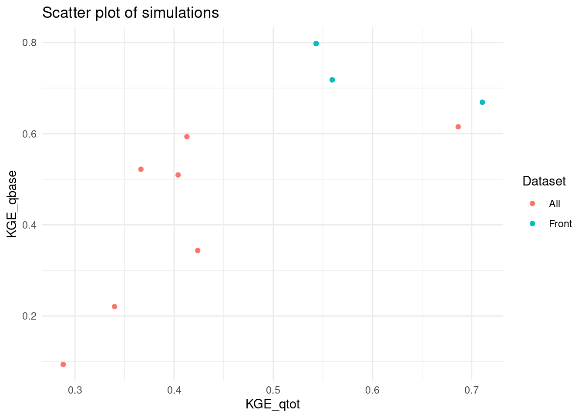
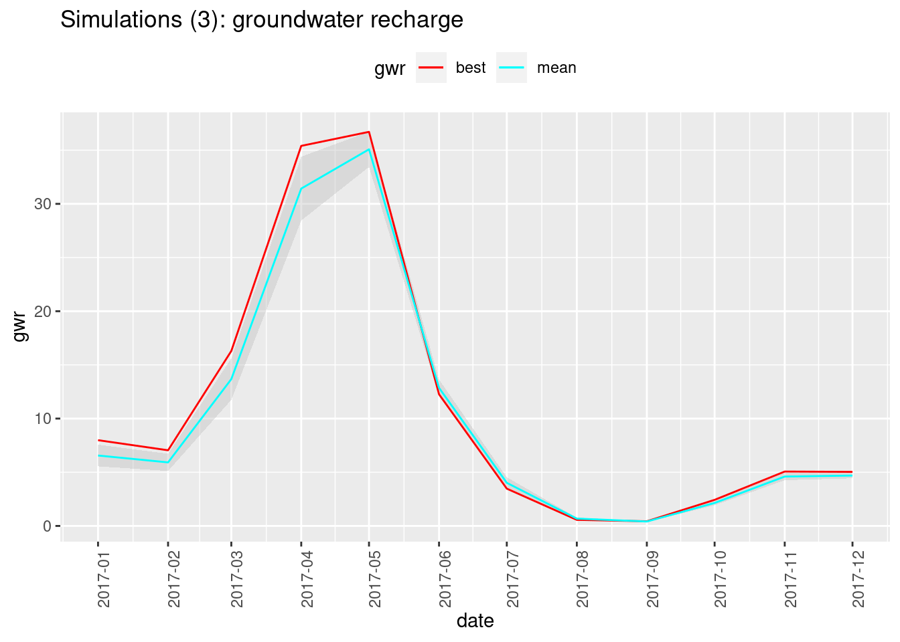
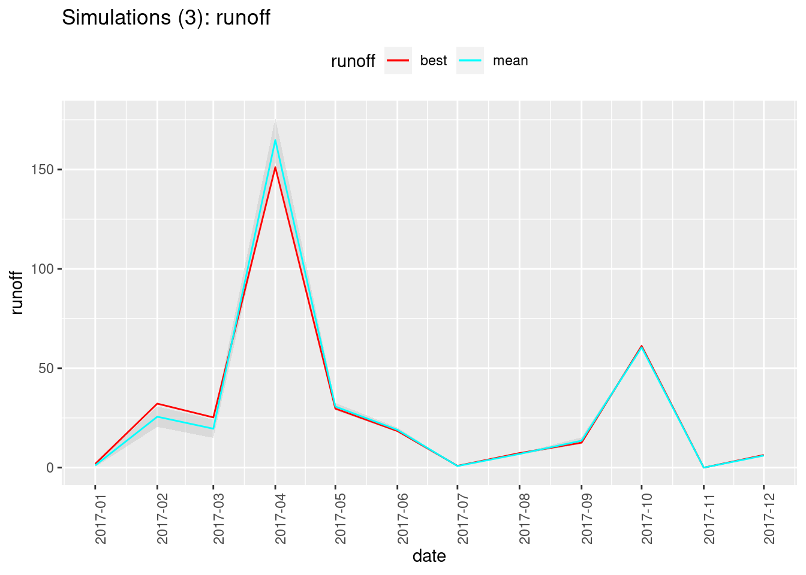
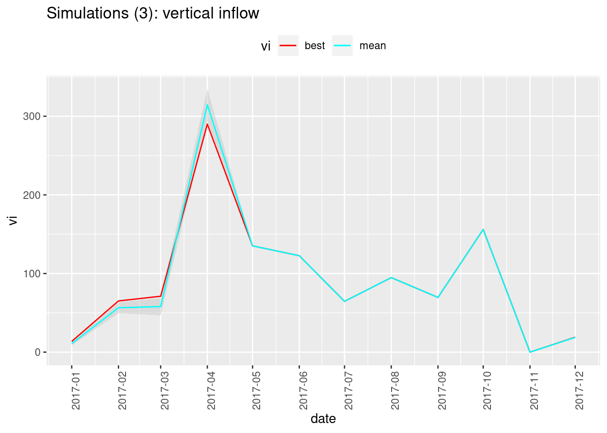
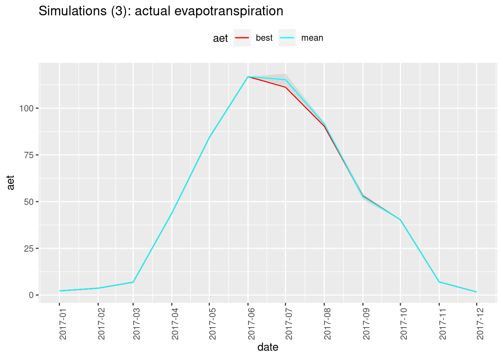

Chapter 3 Calibration and Sensitity
We will make use of rechaRge API to perform calibration and sensitivity analysis with different tools.
3.1 Quality assessment
Following the previous example, we will need to load observations datasets:
input_rcn_gauging <- paste0(base_url, "rcn_gauging.csv.gz") # relation between gaugins station and RCN cell IDs
input_observed_flow <- paste0(base_url, "observed_flow.csv.gz") # flow rates in mm/d
input_alpha_lyne_hollick <- paste0(base_url, "alpha_lyne_hollick.csv.gz")And we also need in this case to update the settings of the HydroBudget model object, so that column names match with the expected ones:
HB$rcn_gauging_columns <- list(
rcn_id = "cell_ID",
station_id = "gauging_stat"
)
HB$alpha_lyne_hollick_columns$station_id <- "station"Then we can process the river flow observations and assess simulation quality:
quality <- rechaRge::evaluate_simulation_quality(
HB,
water_budget = water_budget,
rcn_gauging = input_rcn_gauging,
observed_flow = input_observed_flow,
alpha_lyne_hollick = input_alpha_lyne_hollick,
period = simul_period
)The rechaRge package proposes an model-free implementation of the Kling-Gupta Efficiency algorithm, that can be used for quality evaluation. In the case of our example the quality measurements of interest are:
list(
KGE_qtot_cal_mean = mean(quality$simulation_metadata$KGE_qtot_cal),
KGE_qbase_cal_mean = mean(quality$simulation_metadata$KGE_qbase_cal))$KGE_qtot_cal_mean
[1] 0.8549218
$KGE_qbase_cal_mean
[1] 0.72032243.2 Using sensitivity
The sensitivity R package can perform various sensitivity analysis.
3.2.1 Define model function
library(rechaRge)
library(data.table)
# Preload input data
# Quiet download
options(datatable.showProgress = FALSE)
# use input example files provided by the package
base_url <- "https://github.com/gwrecharge/rechaRge-book/raw/main/examples/input/"
input_rcn <- fread(paste0(base_url, "rcn.csv.gz"))
input_climate <- fread(paste0(base_url, "climate.csv.gz"))
input_rcn_climate <- fread(paste0(base_url, "rcn_climate.csv.gz"))
input_rcn_gauging <- fread(paste0(base_url, "rcn_gauging.csv.gz"))
input_observed_flow <- fread(paste0(base_url, "observed_flow.csv.gz"))
input_alpha_lyne_hollick <- fread(paste0(base_url, "alpha_lyne_hollick.csv.gz"))
# Simulation period
simul_period <- c(2017, 2017)
hydrobudget_eval <- function(i) {
# Calibration parameters
HB <- rechaRge::new_hydrobudget(
T_m = i[1],
# melting temperature (°C)
C_m = i[2],
# melting coefficient (mm/°C/d)
TT_F = i[3],
# Threshold temperature for soil frost (°C)
F_T = i[4],
# Freezing time (d)
t_API = i[5],
# Antecedent precipitation index time (d)
f_runoff = i[6],
# Runoff factor (-)
sw_m = i[7],
# Maximum soil water content (mm)
f_inf = i[8] # infiltration factor (-)
)
# Input data specific settings
HB$rcn_columns <- list(
rcn_id = "cell_ID",
RCNII = "RCNII",
lon = "X_L93",
lat = "Y_L93"
)
HB$climate_columns$climate_id <- "climate_cell"
HB$rcn_climate_columns <- list(climate_id = "climate_cell",
rcn_id = "cell_ID")
HB$rcn_gauging_columns <- list(rcn_id = "cell_ID",
station_id = "gauging_stat")
HB$alpha_lyne_hollick_columns$station_id <- "station"
# Simulation with the HydroBudget model
water_budget <- rechaRge::compute_recharge(
HB,
rcn = input_rcn,
climate = input_climate,
rcn_climate = input_rcn_climate,
period = simul_period,
workers = 1
)
# Evaluate simulation quality
result <- rechaRge::evaluate_simulation_quality(
HB,
water_budget = water_budget,
rcn_gauging = input_rcn_gauging,
observed_flow = input_observed_flow,
alpha_lyne_hollick = input_alpha_lyne_hollick,
period = simul_period
)
return(c(
mean(result$simulation_metadata$KGE_qtot_cal),
mean(result$simulation_metadata$KGE_qbase_cal)
))
}3.2.2 Run sensitivity analysis
library(sensitivity)
# Use future package to parallel
library(future.apply)
hydrobudget_sens <- function(X) {
kge_hb <- as.matrix(t(future_apply(X, MARGIN = 1, FUN = hydrobudget_eval, future.seed = TRUE)))
return(kge_hb)
}
# Number of variables
nvar <- 8
# Range of the parameters
binf <- c(1, 4, -20, 5, 3.05, 0.5, 160, 0.01)
bsup <- c(2.5, 6.5, -12, 30, 4.8, 0.6, 720, 0.05)
# parallel computation setting
plan(multisession, workers = 3)
#plan(sequential) # non parallel
sensitivity_results <- morris(
model = hydrobudget_sens,
factors = nvar,
r = 2,
design = list(type = "oat", levels = 5, grid.jump = 3),
binf = binf,
bsup = bsup)3.2.3 Handle sensitivity results
# Variable of interest
mu <- apply(sensitivity_results$ee, 3, function(M){
apply(M, 2, mean)
})
mu.star <- apply(abs(sensitivity_results$ee), 3, function(M){
apply(M, 2, mean)
})
sigma <- apply(sensitivity_results$ee, 3, function(M){
apply(M, 2, sd)
})
sensitivity_eval <- data.table(mu = mu, mu.star = mu.star, sigma = sigma)| mu.ycol1 | mu.ycol2 | mu.star.ycol1 | mu.star.ycol2 | sigma.ycol1 | sigma.ycol2 |
|---|---|---|---|---|---|
| 0.1205717 | -0.0864912 | 0.1205717 | 0.0864912 | 0.0050324 | 0.0142938 |
| 0.0115408 | -0.0132539 | 0.0135028 | 0.0132539 | 0.0190958 | 0.0098226 |
| 0.0000000 | 0.0000000 | 0.0000000 | 0.0000000 | 0.0000000 | 0.0000000 |
| 0.0000000 | 0.0000000 | 0.0000000 | 0.0000000 | 0.0000000 | 0.0000000 |
| 0.0175343 | -0.0133656 | 0.0175343 | 0.0133656 | 0.0011581 | 0.0005088 |
| 0.0504893 | -0.0936752 | 0.0504893 | 0.0936752 | 0.0184256 | 0.0350608 |
| -0.2441359 | -0.3296870 | 0.2441359 | 0.3296870 | 0.0184311 | 0.2512911 |
| 0.1151458 | 0.7425489 | 0.1151458 | 0.7425489 | 0.0217597 | 0.2254989 |


3.3 Using caRamel
The caRamel R package can perform both calibration and sensitivity analysis.
3.3.1 Define objective function
We will start by defining the objective function to optimize: this function will run a simulation and quality evaluation and its returned values will be used by caRamel to measure the quality of the injected parameters.
library(data.table)
make_hydrobudget_eval <- function() {
# Preload input data
# Quiet download
options(datatable.showProgress = FALSE)
# use input example files provided by the package
base_url <- "https://github.com/gwrecharge/rechaRge-book/raw/main/examples/input/"
input_rcn <- fread(paste0(base_url, "rcn.csv.gz"))
input_climate <- fread(paste0(base_url, "climate.csv.gz"))
input_rcn_climate <- fread(paste0(base_url, "rcn_climate.csv.gz"))
input_rcn_gauging <- fread(paste0(base_url, "rcn_gauging.csv.gz"))
input_observed_flow <- fread(paste0(base_url, "observed_flow.csv.gz"))
input_alpha_lyne_hollick <- fread(paste0(base_url, "alpha_lyne_hollick.csv.gz"))
# Simulation period
simul_period <- c(2017, 2017)
hydrobudget_eval <- function(i) {
# Calibration parameters
HB <- rechaRge::new_hydrobudget(
T_m = x[i, 1],
# melting temperature (°C)
C_m = x[i, 2],
# melting coefficient (mm/°C/d)
TT_F = x[i, 3],
# Threshold temperature for soil frost (°C)
F_T = x[i, 4],
# Freezing time (d)
t_API = x[i, 5],
# Antecedent precipitation index time (d)
f_runoff = x[i, 6],
# Runoff factor (-)
sw_m = x[i, 7],
# Maximum soil water content (mm)
f_inf = x[i, 8] # infiltration factor (-)
)
# Input data specific settings
HB$rcn_columns <- list(
rcn_id = "cell_ID",
RCNII = "RCNII",
lon = "X_L93",
lat = "Y_L93"
)
HB$climate_columns$climate_id <- "climate_cell"
HB$rcn_climate_columns <- list(climate_id = "climate_cell",
rcn_id = "cell_ID")
HB$rcn_gauging_columns <- list(rcn_id = "cell_ID",
station_id = "gauging_stat")
HB$alpha_lyne_hollick_columns$station_id <- "station"
# Simulation with the HydroBudget model
rechaRge::with_verbose(FALSE)
water_budget <- rechaRge::compute_recharge(
HB,
rcn = input_rcn,
climate = input_climate,
rcn_climate = input_rcn_climate,
period = simul_period,
workers = 1 # do not parallelize, caRamel will do it
)
# Evaluate simulation quality
quality <- rechaRge::evaluate_simulation_quality(
HB,
water_budget = water_budget,
rcn_gauging = input_rcn_gauging,
observed_flow = input_observed_flow,
alpha_lyne_hollick = input_alpha_lyne_hollick,
period = simul_period
)
return(c(
mean(quality$simulation_metadata$KGE_qtot_cal),
mean(quality$simulation_metadata$KGE_qbase_cal)
))
}
return(hydrobudget_eval)
}3.3.2 Run calibration analysis
Then perform calibration with sensitivity:
library(caRamel)
# Number of objectives
nobj <- 2
# Number of variables
nvar <- 8
# All the objectives are to be maximized
minmax <- c(TRUE, TRUE)
# Ranges of the parameters
bounds <- matrix(nrow = nvar, ncol = 2)
bounds[, 1] <- c(1, 4, -20, 5, 3.05, 0.5, 160, 0.01)
bounds[, 2] <- c(2.5, 6.5, -12, 30, 4.8, 0.6, 720, 0.05)
calibration_results <- caRamel(
nobj = nobj,
nvar = nvar,
minmax = minmax,
bounds = bounds,
func = make_hydrobudget_eval(),
prec = matrix(0.01, nrow = 1, ncol = nobj),
sensitivity = FALSE, # you can include sensitivity analysis
archsize = 100,# adjust to relevant value
popsize = 10, # adjust to relevant value
maxrun = 10, # adjust to relevant value
carallel = 1, # do parallel ...
numcores = 2 # ... on 2 cores
)3.3.3 Handle calibration results
Make use of calibration results, by merging simulation outputs with front objectives, to get more readable parameters, ordered by “best fit” score:
output_front <- data.table::data.table(cbind(calibration_results$parameters, calibration_results$objectives))
colnames(output_front) <- c("T_m", "C_m", "TT_F", "F_T", "t_API", "f_runoff", "sw_m", "f_inf", "KGE_qtot", "KGE_qbase")
y <- 0.6 # choose your KGE weight criteria
output_front[, `:=`(KGE_score = (KGE_qtot * (1 - y) + KGE_qbase * y))]
output_front <- output_front[order(KGE_score, decreasing = TRUE)]| T_m | C_m | TT_F | F_T | t_API | f_runoff | sw_m | f_inf | KGE_qtot | KGE_qbase | KGE_score |
|---|---|---|---|---|---|---|---|---|---|---|
| 1.220945 | 5.139494 | -17.76089 | 6.741945 | 3.733839 | 0.5931619 | 291.6047 | 0.0340887 | 0.5432187 | 0.7978018 | 0.6959686 |
| 2.368174 | 4.417795 | -17.12093 | 28.515567 | 4.467887 | 0.5684980 | 182.1013 | 0.0162213 | 0.7107024 | 0.6690268 | 0.6856970 |
| 1.732357 | 5.264492 | -13.85292 | 27.317457 | 3.729216 | 0.5827854 | 297.3610 | 0.0255974 | 0.5593884 | 0.7181728 | 0.6546590 |
Display the results with caRamel’s plotting feature:

Scatter plot the calibration’s simulations, with the resulting Pareto front:
# Plot all using ggplot
library(ggplot2)
front <- data.table(calibration_results$objectives)
colnames(front) <- c("KGE_qtot", "KGE_qbase")
all <- data.table(calibration_results$total_pop[, 9:10])
colnames(all) <- c("KGE_qtot", "KGE_qbase")
combined_data <- rbind(all, front)
combined_data$group <- c(rep("All", nrow(all)), rep("Front", nrow(front)))
ggplot(combined_data, aes(x = KGE_qtot, y = KGE_qbase, color = group)) +
geom_point() +
labs(title = "Scatter plot of simulations",
x = "KGE_qtot", y = "KGE_qbase",
color = "Dataset") +
theme_minimal()
3.3.4 Evaluate uncertainty
For each set of parameters proposed by caRamel, run a simulation and then evaluate the uncertainty of the set of parameters identified as being the “best fit”.
# for each proposed set of parameters, run the water budget simulation
param_ids <- as.numeric(rownames(output_front))
# run simulations
water_budgets <- lapply(param_ids, FUN = function(i) {
x <- output_front
HB <- rechaRge::new_hydrobudget(
T_m = as.numeric(x[i, 1]),
C_m = as.numeric(x[i, 2]),
TT_F = as.numeric(x[i, 3]),
F_T = as.numeric(x[i, 4]),
t_API = as.numeric(x[i, 5]),
f_runoff = as.numeric(x[i, 6]),
sw_m = as.numeric(x[i, 7]),
f_inf = as.numeric(x[i, 8])
)
# Input data specific settings
HB$rcn_columns <- list(
rcn_id = "cell_ID",
RCNII = "RCNII",
lon = "X_L93",
lat = "Y_L93"
)
HB$climate_columns$climate_id <- "climate_cell"
HB$rcn_climate_columns <- list(climate_id = "climate_cell",
rcn_id = "cell_ID")
# Simulation with the HydroBudget model
rechaRge::compute_recharge(
HB,
rcn = input_rcn,
climate = input_climate,
rcn_climate = input_rcn_climate,
period = simul_period,
workers = 2
)
})The following function will, for a given metric (e.g. gwr, runoff etc.):
- make one row per year-month, one column for the value of the “best fit” simulation, one for the mean of all the simulated values, and one for the standard deviation between all the simulated values.
- plot the corresponding time series, showing how the “best fit” compares with the mean and the standard deviation range.
# make one row per year-month and one column per simulated measure
plot_metric <- function(water_budgets, metric, title = NULL) {
# spatialized: add metric values starting from best fit
metrics <- data.table(year = water_budgets[[1]]$year,
month = water_budgets[[1]]$month)
for (i in param_ids) {
param_id <- paste0(metric, i)
set(metrics, j = param_id, value = water_budgets[[i]][[metric]])
}
# non-spatialized: calculate mean, group by year-month
metrics_monthly <- unique(metrics, by = c("year", "month"))[, c("year", "month")]
for (i in param_ids) {
param_id <- paste0(metric, i)
metrics_id <- metrics[ , .(mean = mean(get(param_id))), by = c("year", "month")]
set(metrics_monthly, j = param_id, value = metrics_id$mean)
}
# add mean and sd for each year-month row
ym_cols <- c("year", "month")
set(metrics_monthly, j = "mean", value = apply(metrics_monthly[, !..ym_cols], 1, mean))
set(metrics_monthly, j = "sd", value = apply(metrics_monthly[, !..ym_cols], 1, sd))
set(metrics_monthly, j = "date", value = as.POSIXct(paste(metrics_monthly$year, metrics_monthly$month, "1", sep="-")))
set(metrics_monthly, j = "min", value = metrics_monthly$mean - metrics_monthly$sd)
set(metrics_monthly, j = "max", value = metrics_monthly$mean + metrics_monthly$sd)
colnames(metrics_monthly)[[3]] <- "best"
# plot uncertainty
library(ggplot2)
library(scales)
ggplot(data = metrics_monthly, aes(x = date)) +
geom_ribbon(aes(ymin = min, ymax = max), fill = "gray", alpha = 0.4) +
geom_line(aes(y = best, color = "best")) +
geom_line(aes(y = mean, color = "mean")) +
labs(title = title, color = metric, x = "date", y = metric) +
scale_color_manual(values = c(best = "red", mean = "cyan")) +
scale_x_datetime(date_labels = "%Y-%m", breaks = date_breaks("months")) +
theme(axis.text.x = element_text(angle = 90), legend.position = "top")
}We can now visualize the uncertainty for different metrics:
plot_metric(water_budgets, "gwr", title = paste0("Simulations (", length(param_ids),"): groundwater recharge"))
plot_metric(water_budgets, "runoff", title = paste0("Simulations (", length(param_ids),"): runoff"))
plot_metric(water_budgets, "vi", title = paste0("Simulations (", length(param_ids),"): vertical inflow"))
plot_metric(water_budgets, "aet", title = paste0("Simulations (", length(param_ids),"): actual evapotranspiration"))